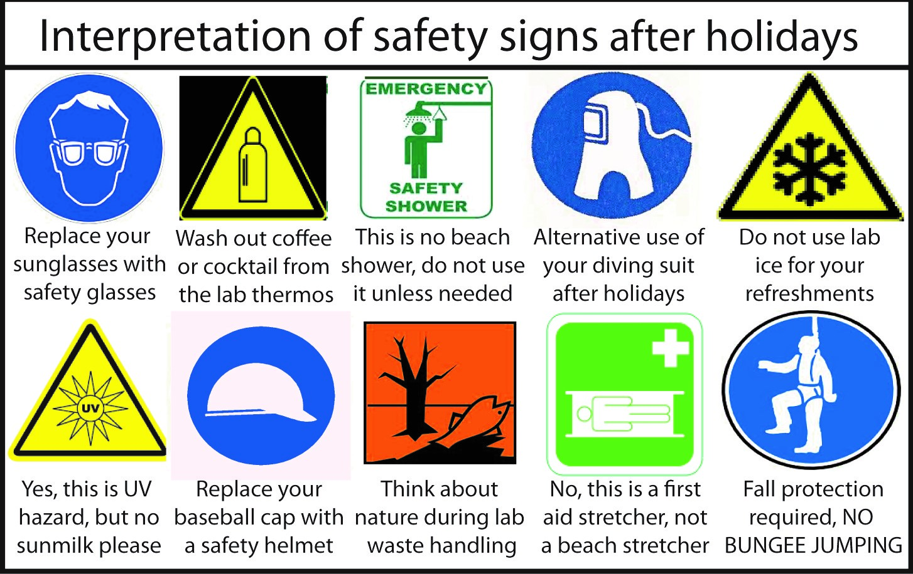

1. Emergency signs
2. Emergency Procedures
In the event of accident, students must immediately inform the lecturer or TSO. Dial 995 for Ambulance/SCDF, call SP Emergency hotline 6772-1234 for all emergencies and incident reporting. When making an emergency call, it is essential to give precise information as follows:
1. Name of caller
2. Location (block and room number)
3. Nature of emergency e.g. fire, explosion, violent or abusive behaviour, etc.
3. FabLab SP
3. Rules & regulations
1.Attire wise always have a short sleeved shirt and long pants on.
2.No loose clothing or jewelry.
3.Do not use compressed air to clean clothes.
4.Covered shoes must be worn at all times. No open tops or exposed toes.
5.Anyone with long hair must tie them up to avoid entanglement.
6.Certain workshops require use of protective gear such as goggles/safety glasses, masks, gloves, ear plugs/earmuffs.
7.Food and drinks are strictly prohibitted in workshops.
8.Students are required to turn off their mobile phones while working in the workshops as it prevents them from being distracted.
9.Be alert at all times and abide warning signs.
10.Familiarize yourself with the location of first-aid equipment.
11.Know the locations of emergency exitsand assembly area.
12.Safe operating and work procedures must be referred or adhered to.
13.Do not interact with machines unless instructed to do so.
14.When in doubt, seek help from lecturer-in-charge or TSO.
15.Do not temoper with safety devices or machines.
16.Do not take unsafe short cuts or by-pass any safety device or controls.
17.Keep your work area clean before leaving the workshop.
18.Report any usafe conditions or acts to lecturer-in-charge or TSO.
19.If unwell or injured, inform lecturer-in-charge or TSO immediately.